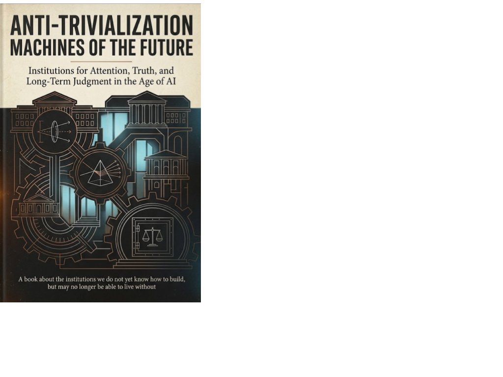

Outfinitist Philosophy · Axiologic Research Editions
Anti-Trivialization Machines of the Future
Institutions for Attention, Truth, and Long-Term Judgment in the Age of AI
When machines can produce endless content, the scarce resource is no longer information. It is the human and institutional capacity to notice what deserves to matter.
The problem is not pleasure. It is trivialization.
This book begins with a useful distinction. Play, entertainment, gossip and temporary irrelevance belong to a livable human life; the problem is not that people enjoy them. Trivialization begins when matters that require context, memory, uncertainty and judgment are reorganized by the selection rules of immediate attention. Politics becomes performance, science becomes a headline, education becomes a dashboard, and institutions start to think at the speed of the feed.
That diagnosis changes the remedy. The book refuses the lazy answer that citizens must simply become more disciplined. When digital environments and organizations are optimized to interrupt, measure and accelerate, individual willpower is no longer an adequate public infrastructure. The question becomes institutional: what rules, rights, tools and shared practices can turn a noisy flow of information back into accountable judgment?
Machines that make seriousness possible
An anti-trivialization machine is not necessarily a computer. A court, archive, scientific journal, professional code, public-health agency or well-designed meeting can perform the same work: it slows a decision where slowing matters, preserves a record, forces reasons into view and gives disagreement somewhere to go. The book asks what their successors might look like when AI makes reports, summaries, forecasts and plausible recommendations almost free.
Can attention be governed as a shared resource? It proposes information budgets, protected modes of work and communication rules that make the attention cost imposed on others visible.
Can truth be defended without a ministry of truth? It argues for inspectable provenance, adversarial review and durable histories of public claims, without granting a single institution the right to settle reality forever.
Can institutions remember the future? It explores long-term records, sunset clauses, independent review and polycentric alternatives that let societies learn from delayed consequences without hardening into a new bureaucracy.
The aim is not a civilisation of permanent solemnity. It is one in which depth, correction and dissent still have a place to survive.
A practical optimism about the AI transition
This is not an anti-technology lament. It treats AI as an amplifier of two opposite possibilities: synthetic noise can overwhelm human agency, but the same capabilities can make evidence easier to inspect, institutional memory easier to search and forgotten warnings easier to recover. The proposed answer is neither nostalgia nor a final doctrine. It is corrigible design: every powerful counter-machine needs challengers, revision paths and limits of its own.
Read it if you build AI systems, lead an organization, work in research or education, or simply want a richer response to the attention economy than switching off notifications. It offers a vocabulary for protecting the conditions under which people can still think together.